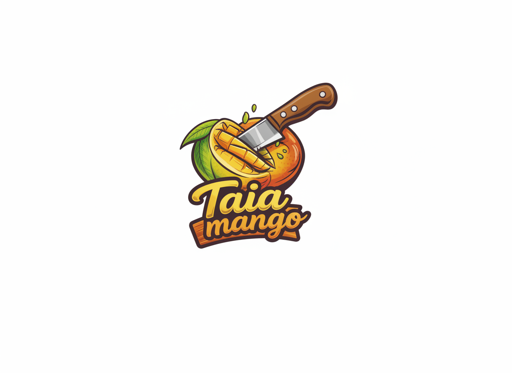
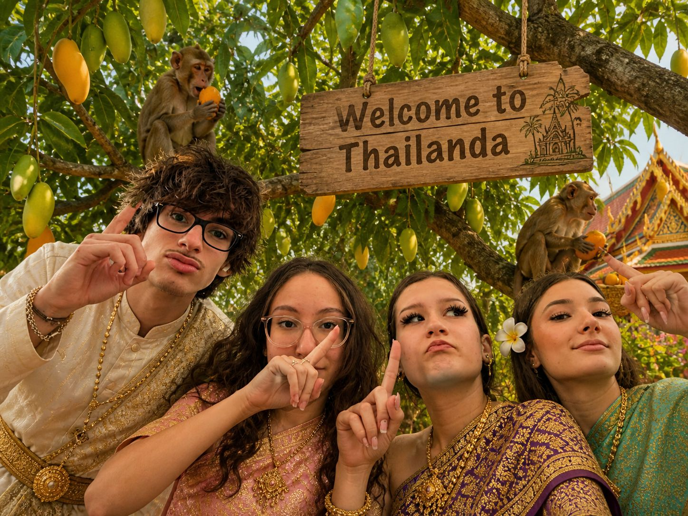
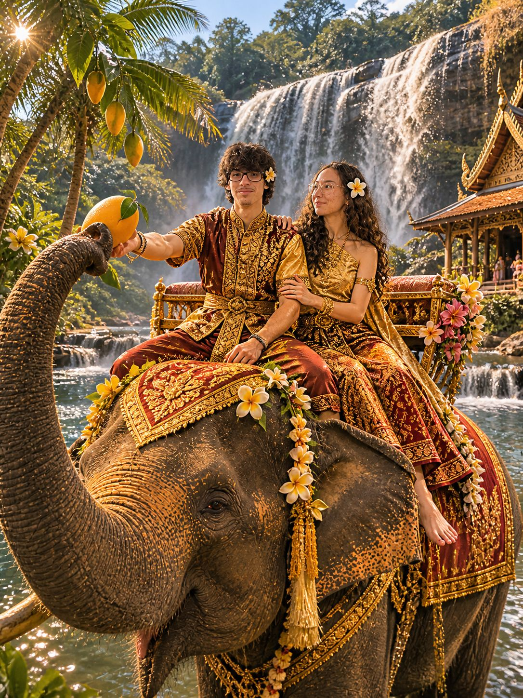
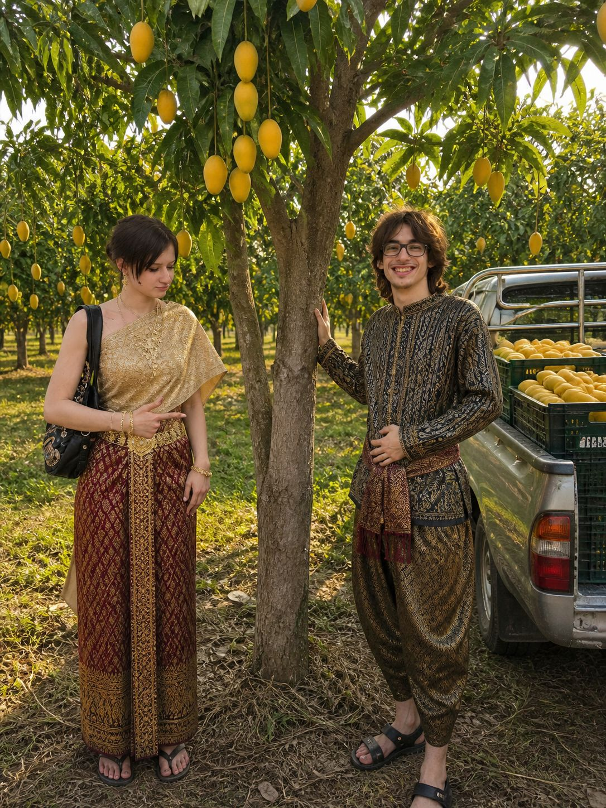
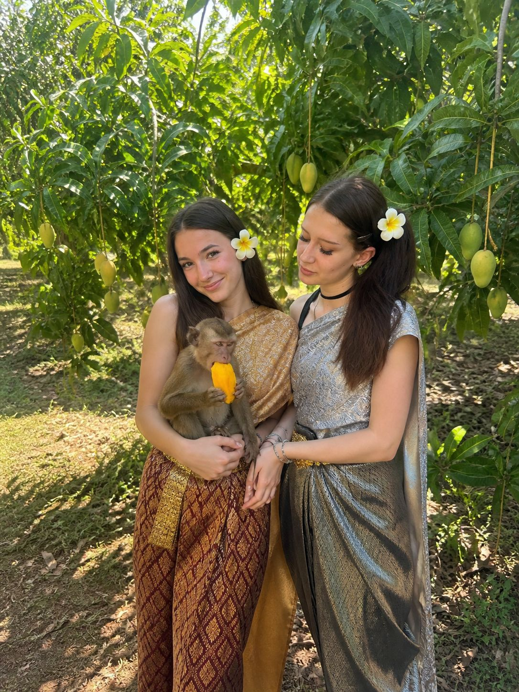
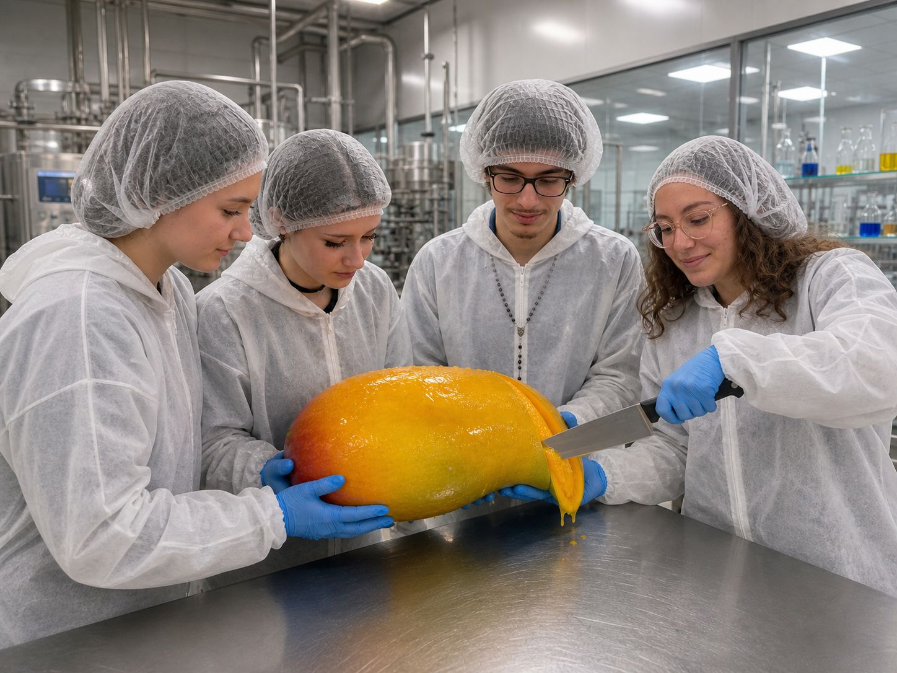

Produsul Nostru
 Vezi detalii & preț
Vezi detalii & preț

Mango uscat 100% natural — răsfăț exotic în fiecare felie.

Totul a început cu o călătorie în care ne-am dorit să ne reconectăm cu natura și să descoperim gusturi autentice.
Am ajuns în Thailanda, un loc unde mango-ul are o aromă unică, iar tradițiile locale ne-au inspirat profund.

Am cunoscut oameni care trăiesc în armonie cu pământul și am gustat mango direct din pom.
A fost o experiență care ne-a făcut să înțelegem ce înseamnă cu adevărat natural și pur.

Într-o astfel de zi a apărut scânteia ideii: „Cum ar fi să aducem acasă gustul autentic de mango?”.
Așa a început povestea Taia Mango.

Ne-am întors acasă cu dorința de a crea un produs simplu, natural, sănătos și extrem de gustos.
Am testat cele mai bune metode de uscare pentru a păstra aroma autentică.

Astăzi, Taia Mango oferă mango uscat 100% natural — fără zahăr, fără aditivi, fără compromisuri.
Exact așa cum l-am descoperit în aventurile noastre.
Vezi detalii & preț